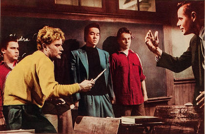
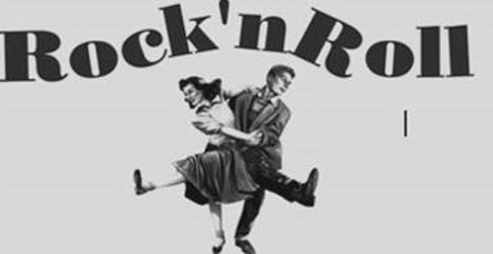

История рок-н-ролла
Термину «рок-н-ролл» мы обязаны Алану Фриду, американскому диджею. Он работал на кливлендской радиостанции и очень часто ставил в эфир негритянскую музыку, потому что заметил, как к ней тяготеет белая молодежь. Само название рок-н-ролл появилось из популярной на то время песни «We’ll rock, we’ll roll». Это произошло в 1952 году.
Дав имя новому жанру, Алан стал активно его продвигать. Радиоэфира ему показалось мало, поэтому он стал устраивать рок-балы. На них собиралось черное и белое население — американская общественность была возмущена! Но почему? Ответ на этот вопрос дает история США.
Расовая неприязнь в Америке после Второй мировой войны обострилась. Черному населению не разрешалось садиться в автобусе, если стоял белый американец.В южных штатах юноши и девушки разного цвета кожи даже танцевали на разных этажах. Такое же враждебное отношение складывалось и к негритянской музыке. Госпелам, ритм-энд-блюзу было не место в радиоэфире. Но так считало лишь старшее поколение, которое тяготело к кантри и оркестровой музыке, лишенной импровизаций и ярких эмоций.
Послевоенная молодежь требовала новых кумиров, новой музыки, свободной и зажигательной. Молодые люди того времени не разделяли расовых предрассудков, поэтому без тени сомнений блуждали по черным радиостанциям в поисках ритмичных звучаний. Этим и воспользовался Алан Фрид.
Консервативные родители не разделяли интересы своих детей. Как итог — рок-н-роллу объявили войну. Известные персоны называли рок-н-ролл «черной заразой», способной уничтожить Америку. В школах под запрет попали джинсы, родители ругали детей за их вкусы, в попытке ослабить влияние негритянской культуры. Но для молодых американцев, которые устали жить в мире заблуждений, цвет кожи любимых исполнителей не имел значения.

Все изменила песня «Rock Around the Clock» в исполнении Билла Хейла, белокожего американца. Впервые публика ее услышала в апреле 1954 года, но встретила без особого энтузиазма. Но достаточно было сделать композицию саундтреком к молодежному фильму «Джунгли грифельных досок», чтобы начался век рок-н-ролла. Сейчас мало, кто знает про эту киноленту, а вот «Rock Around the Clock» угадывается с первых аккордов.
К моменту записи песни Биллу Хейлу исполнилось 30 лет. Возраст не единственное, чем он отталкивал молодежь. В нем не было энергии чернокожих исполнителей, которую жаждали молодые люди. Они ждали нового кумира, отвечающего их требованиям. Им стал Элвис Пресли. С его появлением и начался расцвет рок-н-ролла, пик которого приходится на 1957 год.
К ранним исполнителям рок-н-ролла также относятся Литл Ричард и Фэтс Домино, игравший буги-вуги на своем любимом пианино. Каждый из музыкантов вносил в музыку что-то свое. Чак Берри выделялся эффектными движениями, которые используются на рок-концертах до сих пор. Литл Ричард запоминается бешеным ритмом и громкими воплями.
Чем популярнее становилась новая музыка, тем громче возмущались противники. Поведение Элвиса в сочетании с его смелым образом лишь распаляло огонь. Сбрасывать с себя одежду во время концерта было возмутительно, по мнению консервативных американцев. Несмотря на это, молодежь продолжала танцевать под зажигательные ритмы.
Вторая волна исполнителей рок-н-ролла включает такие имена: Карл Перкинс, Джэрри Ли Льюис и Бадди Холли, который несмотря на классический костюм и очки завоевал чернокожую аудиторию. Не менее известен среди поклонников жанра и Лин Рей. Благодаря этому американцу мы знаем гитарную музыку такой, какой она есть.
В конце 50-х в газетах стали появляться заголовки: «Рок-н-ролл умер». Поклонникам было о чем задуматься. Ведь Элвиса призвали в армию, Чак Берри получил тюремный срок, Джерри Ли Льюис потерял уважение поклонников из-за женитьбы на несовершеннолетней, а Бадди Холли и Ричи Валенс трагически погибли в авиакатастрофе. Кто сможет продолжить плеяду хитов и распалить сердца молодежи? Ливерпульская четверка. Битлам удалось придать рок-н-роллу иноезвучание и заставить весь мир сходить с ума по своим песням. Но это уже новый виток в развитии музыки.
